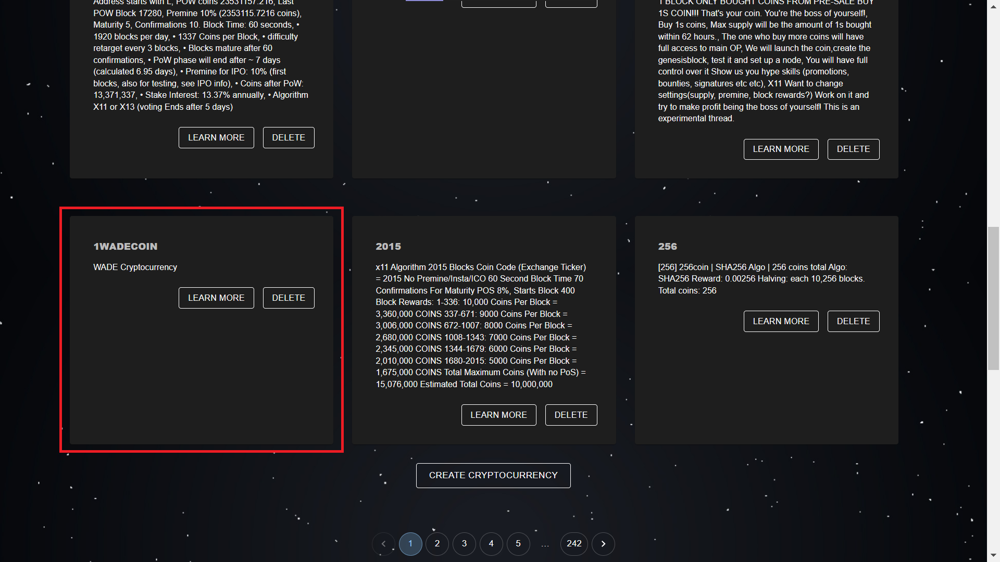

cryk (cryptocurrency knowledge manager)
- user guide -
Team - Tech Army
Members
- Ciprian Daniș
- Diana-Isabela Crainic
- Ioan Sava
Table of Contents
1 Introduction
This user guide is designed to help you get started with the Cryptocurrency Knowledge Management System, a modular web system for managing and expressing knowledge about cryptocurrencies and their metadata. The system queries information via a SPARQL endpoint and provides it in HTML+RDFa and JSON-LD formats, as well as multiple visualizations.
2 Use cases
2.1 Login and Create a Cryptocurrency
Access the Cryptocurrencies page:
In order to create a cryptocurrency, the authentication is needed. Only the admin user can perform mutations on the cryptocurrencies. The Login as administrator button is located in the bottom of the page:
Enter the credentials received on the email:
Now, you can create your own cryptocurrency! Press the Create Cryptocurrency button in order to create one.

Please fill in the fields in the form.
- symbol represents the name of the cryptocurrency
- description is about some words about the cryptocurrency
- website represents the website of the cryptocurrency
- source represents the source of the cryptocurrency
- block reward represents the block reward of the cryptocurrency
- total coins represents the total coins of the cryptocurrency
An example of a filled form:
Your very first cryptocurrency is displayed in the list of the cryptocurrencies!
2.2 Update and Delete a Cryptocurrency
In order to update a cryptocurrency, you need to be authenticated as administrator. If you need information about the login process, please read the previous section. Once you are logged in, to update a cryptocurrency choose one and press the Learn more button:
A new page with more information about the chosen cryptocurrency will be opened. Press the Update button:
Please update the information that you want about the cryptocurrency and the press Save:
Now, you can see the updated content of the cryptocurrency:
In order to delete a cryptocurrency, you also need to be authenticated as administrator. Please access the main page with the list of cryptocurrencies, choose the one that you want to delete and press the Delete button:
A dialog will open which will ask if you are sure about the deletion. Press Agree if you want to delete the cryptocurrency. Otherwise, press Disagree.
2.3 Export a Cryptocurrency in JSON-LD Format
An user and also the administrator can export a crypto in JSON-LD format. Firstly, choose the cryptocurrency that you want to export, then press Learn more.

Next, please press the Export as JSON-LD button.
The file was downloaded:
Open the file and view the cryptocurrency in JSON-LD format:
2.4 Add, Update, Delete News for a Cryptocurrency
In order to add, update, or delete news for a cryptocurrency, you need to be authenticated as administrator. If you need information about the login process, please read the first section. Once you are logged in, to add news to a cryptocurrency, choose one cryptocurrency and press the Learn more button:
Press the Create news button:
A form will open and 2 fields must be filled in.
- title represents the title of the news
- description represents the description of the news
Now, the news is created! You can see it on the Cryptocurrency Information page along with the details about the cryptocurrency.

If you want to update the news, you must be authenticated as administrator and simply press the Update button.
Make the update for the news, then press the Save button:
Now you cand see the updated news!
For deleting the news, you must be authenticated as administrator and press the Delete button.
A dialog will open asking you if it you are sure about this operation. Press Agree if you want to delete the cryptocurrency, else Disagree to cancel the operation.
Finallyy, if you've decided to delete the cryptocurrency news, it will be removed, as you can see below:
2.5 View the Charts for the Cryptocurrencies from the Current Page
Both the the unauthenticated user and the administrator can view the Charts for the Cryptocurrencies from the Current Page:
2.6 Access the Visualizations page
Both the the unauthenticated user and the administrator can access the Visualizations page containing the pie chart for the Number of cryptocurrencies by protection scheme and the time series charts for the Number of cryptocurrencies by founded date